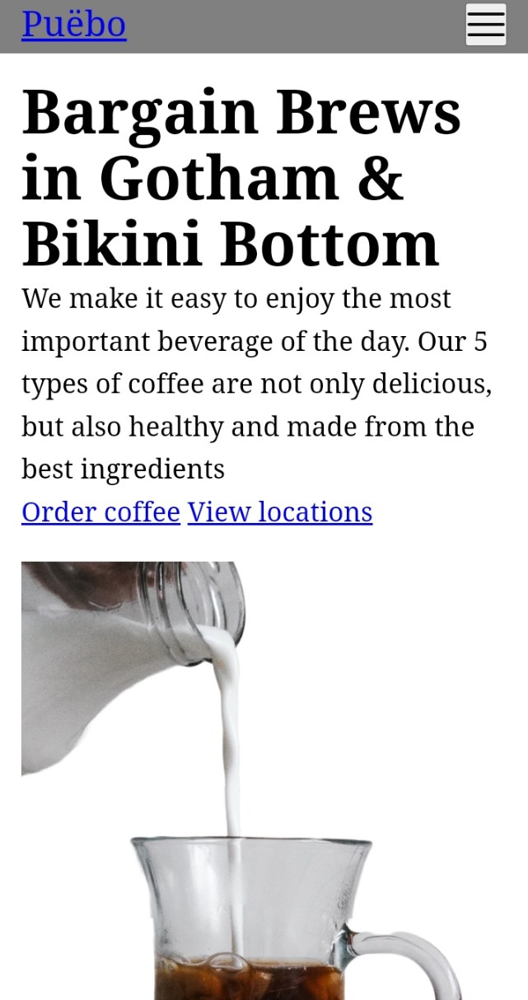
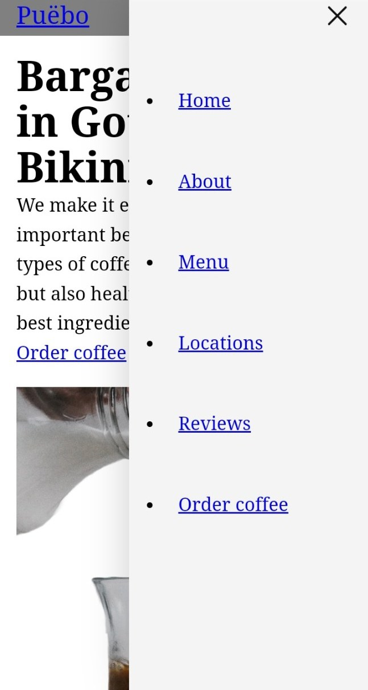
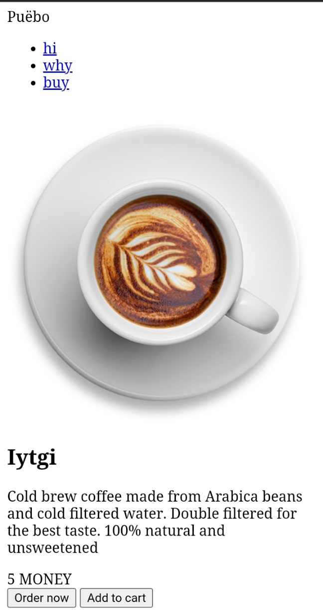
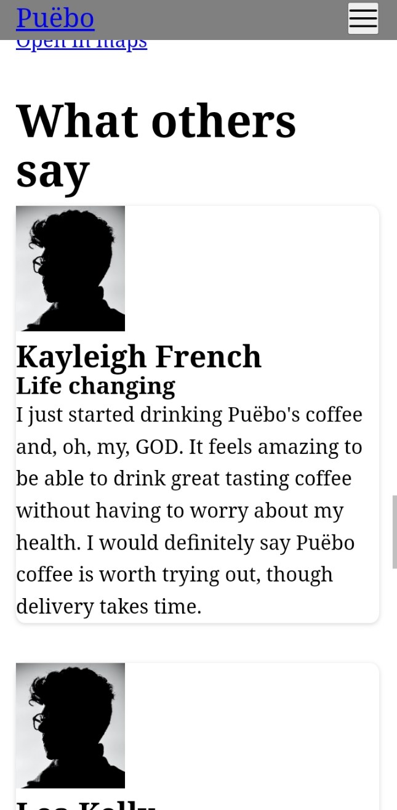

Where I’ve been
This is a short update for all those who were wondering. Which is no one.
New project
I've started a new project. Its a website for a fictional coffee shop named Puebo. It's a medium-sized website but it is very ambitious. I made sketches before making the website so I know how it should look like. Those were terrible. I also started using some new things
New stuff to learn
Git
I started using Git while making it. I used fugitive on vim (rip Bram Molenaar) and it works well. There are a few weird things but it was rewarding.
Grid 🧱
I used grid for some fancy layout stuff. I have no idea how it works. I just trial-and-error it.
I don't know how to design
These sketches were fine for the most part but I didn't think much while designing them. Like how I thought zig zag pictures with descriptions would be cool but it looks terrible in mobile. A good thing about designing was that atleast I'd know what to do for large screens. Unlike this website, which looks trash in desktop
Vacation
I was working pretty consistently on this until vacation. Some things happened and I stopped for a while. But I'm continuing again.
Sneak peek
I didn't work on the CSS of the product pages yet
 Made a hamburger menu with some copied js. It's cool
 Bye
That's it for now. I'm not dead (yet). Cya
Thanks for reading 👋